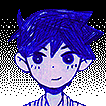

Personajes
OMORI

OMORI es el deuteragonista titular en OMORI. OMORI puede ser controlado por el jugador durante la noche, donde se pueden explorar WHITE SPACE y las áreas de HEADSPACE. Cuando OMORI está a la cabeza, puede cortar obstáculos con su cuchillo.
AUBREY

AUBREY es uno de los tres deuteragonistas principales de OMORI que se unen al grupo de OMORI. Sin embargo, en las secciones del juego de FARAWAY TOWN, ella actúa como una antagonista menor. Cuando se le etiqueta como líder, AUBREY puede aplastar obstáculos con un bate.
KEL

KEL es uno de los tres deuteragonistas principales que se unen al grupo de OMORI en OMORI. Cuando se le etiqueta como líder, KEL puede lanzar varios proyectiles de bolas desde ciertas plataformas para golpear objetos que de otro modo serían inaccesibles para el grupo.
HERO
HERO es uno de los tres deuteragonistas principales de OMORI que se unen al grupo de OMORI. Cuando es etiquetado como el líder, HERO puede usar su encanto para convencer a otros para que ayuden al grupo.